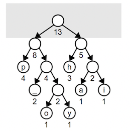

In this lecture we will discuss encoding and compression algorithms, culminating in a discussion the powerful Huffman Coding algorithm.
Lecture Video
Preamble
The following write-up is from the Huffman Coding handout included with A7. This was written by Julie Zelenski with additions from Kenneth Huffman and Keith Schwarz. It closely follows what we did in lecture today.
Introduction
When I was an undergrad, my Mac had a whopping 10MB disk which had me feeling like the big cheese on campus. Today, the dinkiest of storage devices is measured in gigabytes, and my status as a superhero is very much in doubt. But even though capacity has enlarged at an astounding rate, the files we store (images, music, and the all-important funny cat videos) keep pace with that growth, so even our gargantuan disks are overflowing.
One technique to use our storage more optimally is to compress our data. By taking advantage of redundancy or patterns, we “abbreviate” the contents to fit in less space while being able to reconstruct the full original when needed. Such compression is useful to cram more things on a disk or to shorten the time needed to transfer a file across a network. An ongoing task for computer scientists is devising ever more compression strategies to keep pace with the growing demands on our storage devices and network bandwidth.
One strategy for compression that has stood the test of time is Huffman encoding, an elegant algorithm invented by David Huffman in 1952. At the time, he was a graduate student at MIT, and his professor assigned his class a project to develop an optimal compression scheme (without mentioning this was a difficult and unsolved problem). David's solution, published in his paper A Method for the Construction of Minimum-Redundancy Codes is one of the most-cited papers in all of information theory.
An overview of encoding
Computers store information in zeros and ones. We call these binary
digits bits. The ASCII encoding defines the standard mapping for characters to bit sequences. An 8-bit sequence allows for 256 possible characters (2^8 = 256). As an example,
the letter A is encoded as the 8-bit sequence 01000001. ASCII dates back to 1960 and is centric to the Roman alphabet used in Western languages. The newer Unicode system was designed to handle a much broader swath of world languages and employs larger encodings of 16 and 32 bits per character. The more bits you use per character, the wider a
variety of characters you can support in your alphabet.
It simplifies processing if all characters use the same number of bits, but that rigidity can waste space, as all characters are not created equal. The letter e is quite common in English text, but rarely does one see a capital Z. Encoding e as a 6-bit sequence and Z a 9-bit one could result in an overall win, because there would be more occurrences of short sequences and fewer of longer ones.
Even before computers, Samuel Morse took this into account when designing the code that bears his name. The encoding table below shows the sequences of dots and dashes assigned to each letter in Morse code.

The very common letter e is assigned a length-1 sequence and the uncommon letter q a length-4 sequence. Morse code isn’t perfect because some letters are assigned longer codes than optimal. For example, the letter o is more common than the letter i, yet o has a longer sequence than i. If these two assignments were swapped, it could lead to savings in the overall length of an encoded sequence.
Huffman coding is a methodical way for assigning code lengths to produce the shortest total encoding. It was one of the first algorithms for the computer age.
Huffman coding is not specific to characters; it can also be used for compressing images, music, video, and more. All that's needed is to identify the common items in the input (whether it be letters, colors, sounds, etc.) and assign those items a short sequence of bits in the encoding, using longer sequences for items encountered less often.
Standard ASCII encoding
The example input used throughout this document is the famous1 string happy hip hop. Using ASCII encoding, this 13-character string requires 13 × 8 = 104 bits total. The table below shows the relevant subset of the ASCII encoding table.
| Character | Bit sequence |
|---|---|
'h' |
01101000 |
'a' |
01100001 |
'p' |
01110000 |
'y' |
01111001 |
'i' |
01101001 |
'o' |
01101111 |
' ' |
00100000 |
happy hip hop would be encoded in binary as:
01101000 |
01100001 |
01110000 |
01110000 |
01111001 |
00100000 |
01101000 |
01101001 |
01110000 |
00100000 |
01101000 |
01101111 |
01110000 |
  |
To decode, we read in groups of 8 bits (one byte) and convert each to its ASCII equivalent. The first 8 bits are 01101000, which correspond to h.
Data encoded in ASCII does not require any additional information to be decoded since the mapping from binary sequence to characters is the same for all files and computers.
Custom compact fixed-length encoding
Standard ASCII uses an 8-bit sequence to encode every character because it was designed for the full range of 256 different characters. Eight bits per character does add up, and given we have only 7 distinct characters in our phrase, we could get by using shorter bit sequences. We can create a custom encoding by listing the unique characters and assigning each a distinct code. For example, here is one possible such encoding that uses only 3 bits per character:
| Character | Bit sequence |
|---|---|
'h' |
000 |
'a' |
001 |
'p' |
010 |
'y' |
011 |
'i' |
100 |
'o' |
101 |
' ' |
110 |
Using this table, happy hip hop is encoded in binary as:
000 |
001 |
010 |
010 |
011 |
110 |
000 |
100 |
010 |
110 |
000 |
101 |
010 |
The encoded version uses 39 bits instead of the original 104 bits, compressing to 38% of the original size.
To decode this bit sequence, one would need to know the custom encoding, since using 000 for h is not standard practice. Some sort of additional information would have to be included with the encoded bits that provide the encoding.
Variable-length encoding
What if we drop the requirement that all characters take up the same
number of bits? If we use fewer bits to encode characters like p
and h that occur frequently and a longer bit sequence to encode rarer characters y and o, we come out even further ahead. The table below shows an encoding for "happy hip hop" where the code assigned to each character varies in length.
| Character | Bit sequence |
|---|---|
'h' |
01 |
'a' |
000 |
'p' |
10 |
'y' |
1111 |
'i' |
001 |
'o' |
1110 |
' ' |
110 |
happy hip hop encoded using the above variable-length coding is:
01 |
000 |
10 |
10 |
1111 |
110 |
01 |
001 |
10 |
110 |
01 |
1110 |
10 |
The encoded phrase requires a total of 34 bits, shaving a few more bits from the fixed-length version.
The diagram has a box around each character’s bit sequence to help you visualize where the sequence for each character starts and stops, but without this aid, you might wonder how you could know where those boundaries are.
Given the starting sequence 01000101..., do the two bits 01 go together or the three bits 010 or perhaps just the first bit 0? If you look at the
encoding table above, you will see that only one of these options is possible. There is no character that encodes to the single bit 0 and no character that encodes to the sequence 010 or 0100 or 01000 for that matter. There is, however, a character that encodes to 01 and that is h.
An important feature of Huffman coding is the prefix property: no
character’s encoding is a prefix of any other (i.e. if h is encoded as 01, then no other character’s encoding will start with 01, and no character is encoded to just 0). With this guarantee, there is no ambiguity in determining the boundaries during decoding. We start reading from the beginning, gathering a sequence of bits until we find a match in the encoding table. That indicates the end of a character, and we move on to decoding the next character.
Like the custom fixed-length encoding, a Huffman-encoded file will need to provide the information about the encoding used so we will be able to decode the file. Each file’s encoding will be unique since it is explicitly constructed to be optimal for that file's contents.
An encoding tree
You can diagram a binary encoding as a binary tree. The leaf nodes each represent a particular character, and that character's encoding is obtained by tracing the path from the root to its node. Each left-going edge represents a 0, each right-going edge a 1. For example, this tree diagrams the compact fixed-length encoding from above:
Tracing the path from the root to the y node goes left-right-right, which corresponds to a code of 011.
The full ASCII set would be a much larger tree. It would have 8 levels, and the bottom level would contain 256 leaf nodes. The bit sequence for a is 01100001, so following the path left-right-right-left-left-left-left-right
from the root would reach the a node.
Here is a tree for the variable-length Huffman encoding we used earlier:
The path to h is left-right or 01; the path to y is right-right-right-right or 1111. Notice that the prefix property is evidenced in the tree by the fact that characters only occupy leaf nodes (i.e. leaf nodes have no children and are not a prefix of any further nodes).
The above tree for is an optimal tree for happy hip hop —there
is no encoding tree that uses fewer than 34 bits to encode this input. There are other equally optimal trees that also use 34 bits; for example, you can simply swap any sibling nodes in the above tree and get a different but equally optimal encoding.
The Huffman tree doesn’t seem as balanced as the fixed-length encoding tree. When we discussed BSTs, you heard that an unbalanced binary search tree is to be avoided. However, for an encoding tree, that lopsidedness is a good thing. The shorter paths represent frequently occurring characters that are being encoded with fewer bits, and the longer paths are more rare characters. We reduce the total number of bits by shortening the encoding for some characters at the expense of lengthening others. If all characters occurred with equal frequency, we would have a balanced tree where all paths were roughly equal. In such a situation, we can't achieve much compression as there are no patterns that can be leveraged.
Decoding using an encoding tree
A particularly compelling reason to represent an encoding as a tree is the ease with which it supports decoding. Let's use the Huffman tree to decode the stream of bits 111100110101111. Start at the beginning of the bit sequence and at the root of the tree. The first bit is 1, so trace one step to the right. The next bit is 1, so follow right from there. The next two 1 bits make two more right turns, and we have now landed at a leaf, which indicates that we have just completed reading the bit sequence for a single character. Looking at the leaf's label, we learn we just read a y.
Now we pick up where we left off in the bits and start tracing again from the root. Tracing 001 left-left-right leads us to i. Continuing through the remaining bits, we decode the string "yippy". Even though codes don't start and end at fixed boundaries, we have no trouble determining where each character ends because we can detect when the path hits a leaf node in the encoding tree.
Constructing an optimal encoding tree
Now we will learn a process for constructing an optimal encoding tree. Start by tallying the occurrences of each character in the input to get the starting weights for each character. In the happy hip hop example, the character p has weight 4, h has weight 3, the space has weight 2, and the other
characters have weight 1.
Create a leaf node for each character and its weight. Each node is a singleton tree, and a collection of trees is called a forest (we computer scientist are clever, no?). Merge the forest of trees into one combined tree from the bottom upwards, using this process:
- Find the two trees with the smallest weights in the forest and remove them from the forest.
- Create a new tree with these two trees as its subtrees. This tree's weight is equal to the sum of the weights of its subtrees.
- Add the new combined tree back into the forest.
- Repeat steps 1-3 until there is only one tree left in the forest. This is the final encoding tree.
Let's walk through building the optimal tree for "happy hip hop". We start with this forest. The weight of each node is labeled underneath:

Find the two minimum entries. There are four trees with the minimal weight 1, it doesn't matter which two we pick. We choose o and y and combine them into a tree of weight 2. This combined tree goes back into the forest. The light gray box in these diagrams shows the current contents of the forest.

On the next iteration, the two minimum trees in the forest are the weight-1 trees a and i. We remove these and combine into a tree of weight 2. Each iteration decreases the size of the forest decrements by one (we remove two trees and add one combined tree).
Two of the weight 2 trees are joined into a tree of weight 4:

Note that the root of a combined tree doesn’t represent a character like the leaf nodes. An interior node appears along paths that eventually lead to codes, but the prefix itself does not encode a character. One more iteration combines the weight 3 and 2 trees into a tree of weight 5:
Combining the two weight 4 trees builds a tree of weight 8:
Lastly, we combine these two into the final tree whose root has a weight equal to the number of characters in the input.

Note that this tree is different from the tree seen earlier in this document and has slightly different bit sequences. Both trees are equally optimal, and the total number of bits required to encode happy hip hop is the same for either tree. When we have choices among equally weighted nodes, picking a different pair will result in a different, but still optimal, encoding. Similarly, when combining two subtrees, it is equally valid to put one of the trees on the left and the other on the right as it is to reverse them.
Although all such trees are optimal, in order to faithfully restore the original contents, we must be sure to use the exact same tree to decode as was used to encode. Read on to learn how to accomplish this.
Flattening the encoding tree
If I use Huffman coding to optimally compress a message into a sequence of bits and send it to you, the encoded data by itself is not enough. To decode the data, you will also need the encoding tree I used.
The typical strategy is to package the encoded data with additional information about the encoding used. The information is a "flattened" version of the tree, created by traversing the encoding tree and writing down the tree structure and noting which character is located where. To decode the file, the flattened representation is re-inflated to produce a copy of the original encoding tree which is then used to decode bit sequences.
You have to have the secret decoder ring before you can pass notes in class!
References
- Huffman, David. A Method for the Construction of Minimum-Redundancy Codes
- Profile of David Huffman, Encoding the Neatness of Ones and Zeroes, Scientific American, September 1991.
- David Huffman bio, Huffman family website
-
No joke: There is a software patent that uses my silly phrase "happy hip hop" as an example compression input. The patent was filed long after I published this handout, so I'm thinking my earworm infected a former student. Who realized we teachers have such influence…